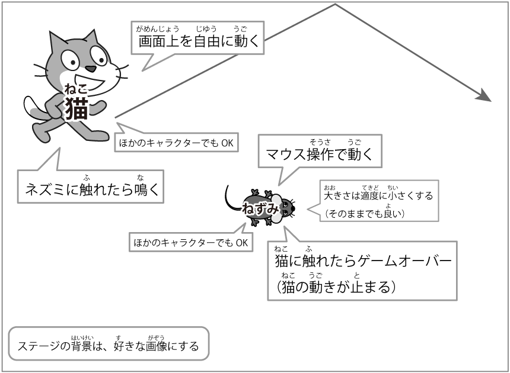
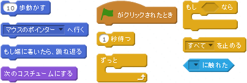

ネコからに逃げろ！（つうしょう通称「ねこ猫に逃げ」）

- ステージにた立っているねこ猫が、
ステージのなか中を歩きまわ回るようにしよう
（ほかのキャラクターでもおっけーOK！）。 - ステージじょう上にネズミをとうじょう登場させよう。
（ひつよう必要におう応じておお大きさをか変えよう。） - ネズミをマウスでうご動くようにしよう。
- ネズミにねこ猫がふ触れたらゲームオーバーになるようにしよう。
- ステージのはいけい背景がしろ白いのでべつ別のはいけい背景にか変えよう。
おうよう応用へん編
- ゲームオーバーになった時のはいけい背景をか変えよう
- ステージにいるねこ猫のかず数をふ増やしてみよう
- さんじゅう30びょう秒でゲームがお終わるようにしよう
- ネズミをじょうげさゆう上下左右キーでうご動くようにしてみよう。
- ねこ猫がネズミにむ向かってく来るようにしよう。
やく役にた立ちそうなきのう機能
- スプライトじょうほう情報(「i」をクリックでひょうじ表示)

- カーソルツール
やく役にた立ちそうなブロック
- 
ここにあ挙げたブロックは、ほんのいちれい一例です。
ここにはないブロックもいろいろ色々つか使ってため試してみよう！